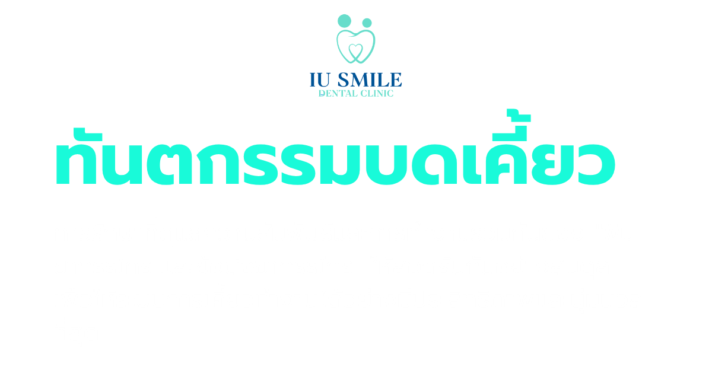
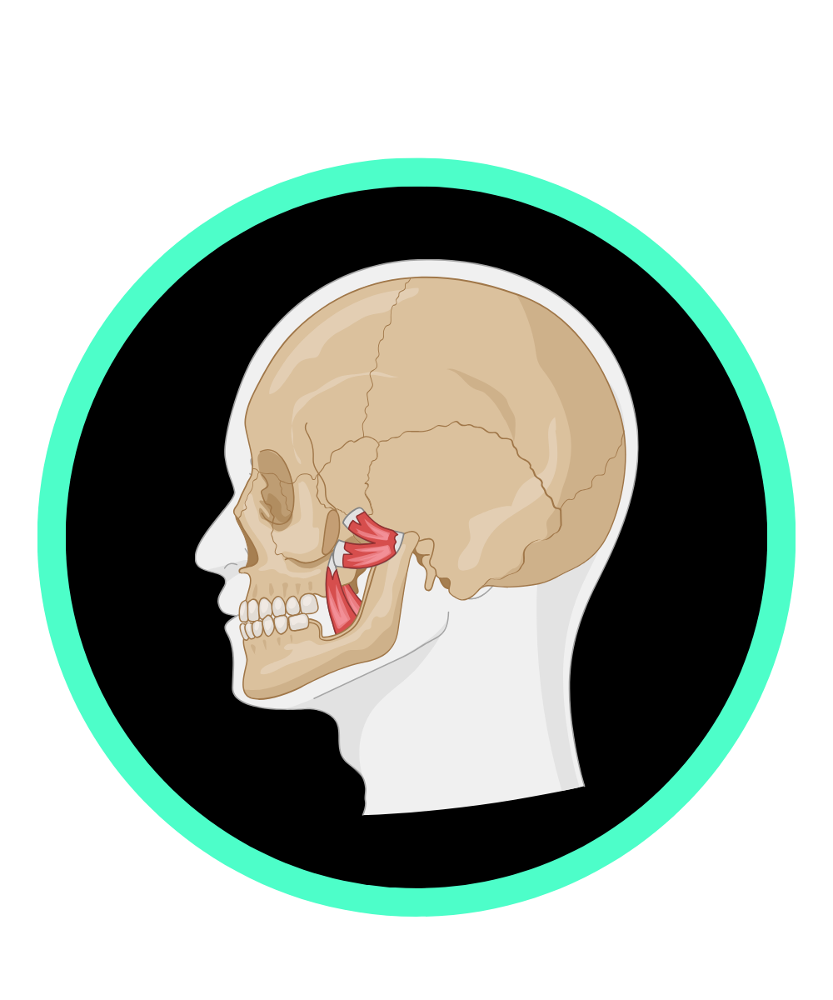
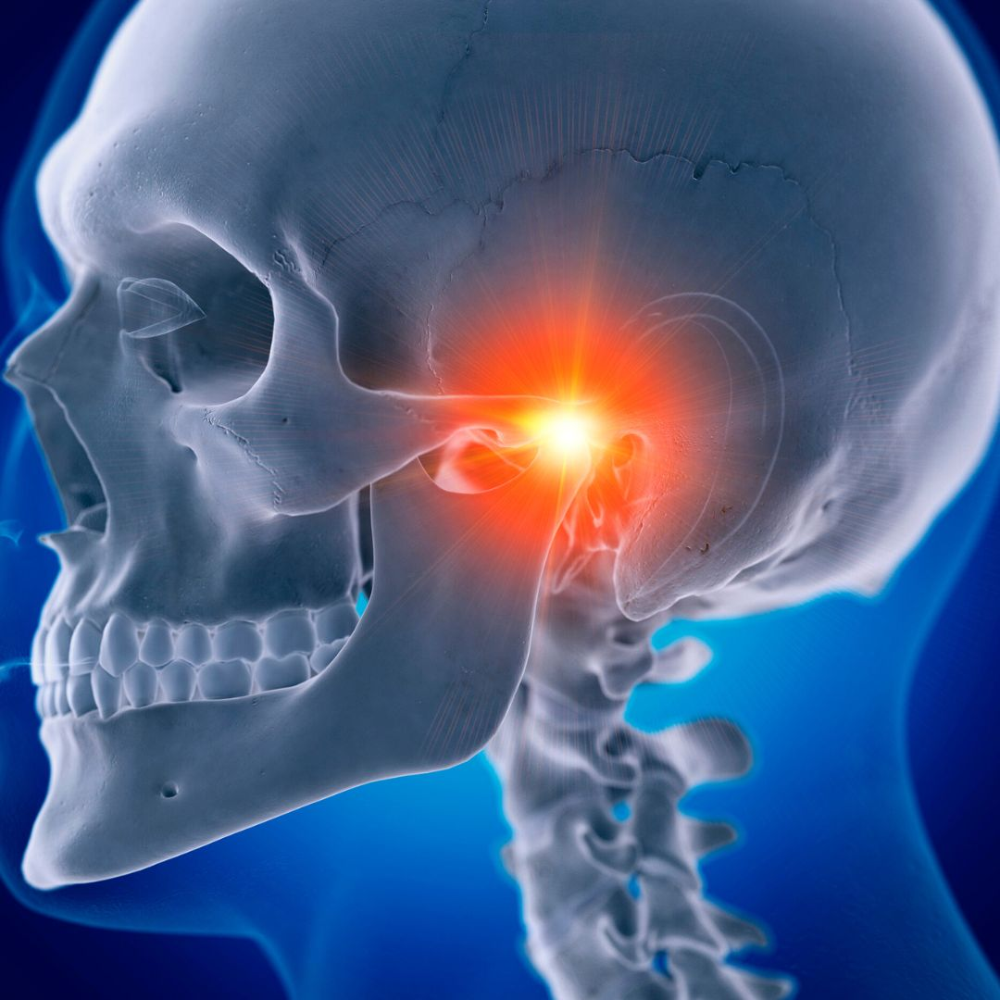
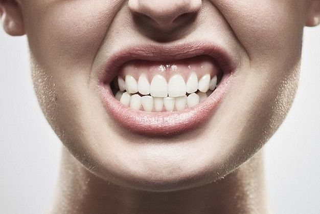
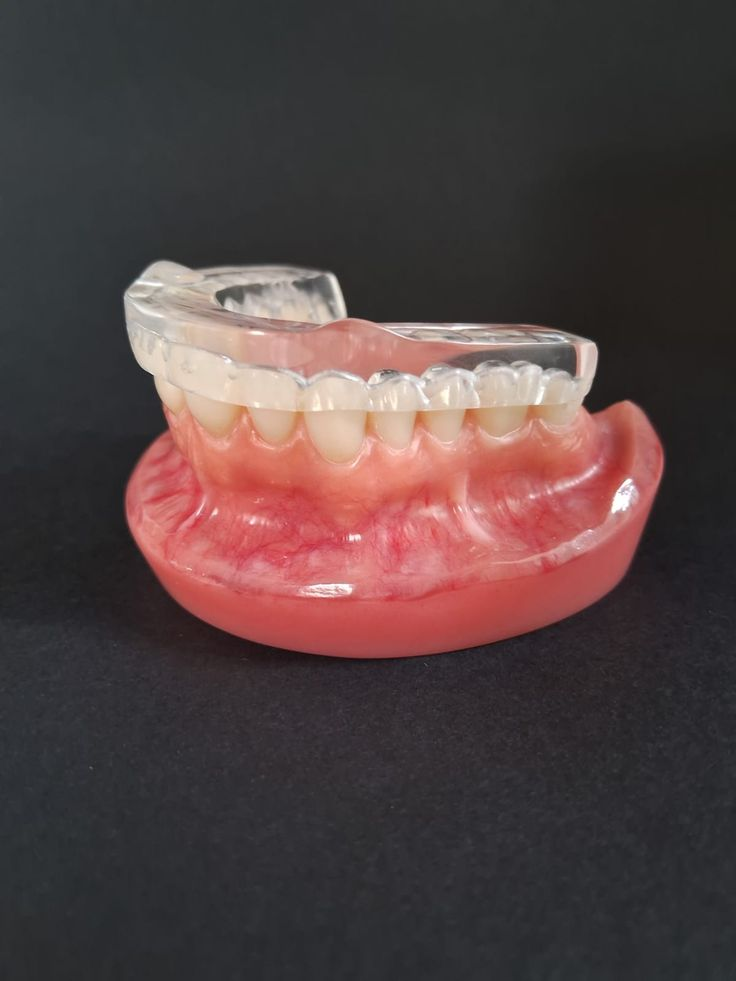
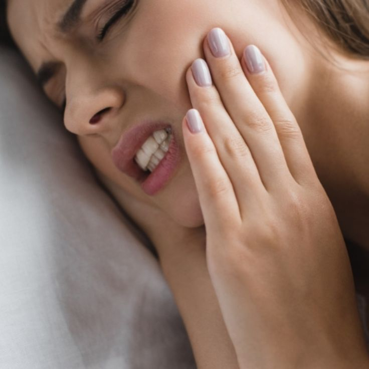
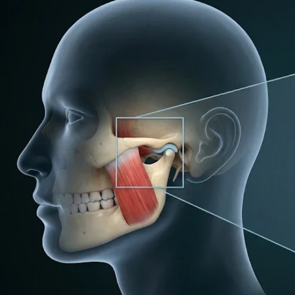
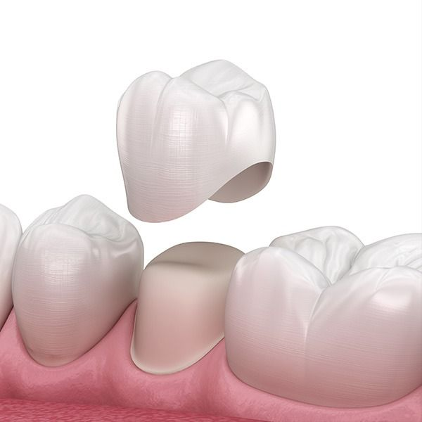
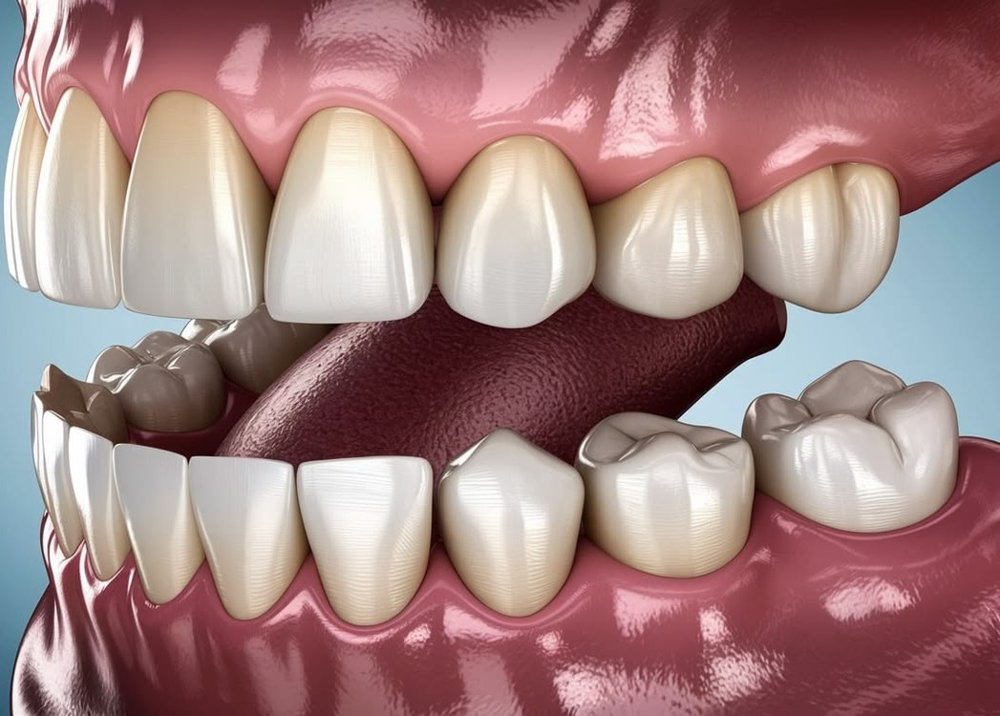

นัดหมายปรึกษา

เป็นปัญหาที่พบได้บ่อยที่สุดในงานทันตกรรมบดเคี้ยว กิดจากการทำงานที่ไม่ประสานกันของข้อต่อขากรรไกร (บริเวณหน้าใบหู) หมอนรองข้อต่อ และกล้ามเนื้อบดเคี้ยว อาการที่สังเกตได้ชัดเจน ได้แก่
มีเสียงผิดปกติ: ได้ยินเสียง "คลิก"หรือเสียงดังกึกกักบริเวณหน้าหูเวลาอ้าปาก หุบปาก หรือเคี้ยวอาหาร
อ้าปากได้จำกัด หรือขากรรไกรค้างไม่สามารถอ้าปากได้กว้างตามปกติ บางรายอาจมีภาวะขากรรไกรค้าง อ้าแล้วหุบไม่ได้ หรือหุบอยู่แล้วอ้าไม่ขึ้น
เจ็บปวดเวลาใช้งานมีอาการปวดบริเวณข้อต่อขากรรไกรเวลาเคี้ยวอาหารแข็ง เหนียว หรือเวลาหาวกว้างๆ

เป็นพฤติกรรมการเกร็งกล้ามเนื้อและบดถูฟันโดยที่คนไข้ไม่รู้ตัว มักเกิดขึ้นขณะหลับ หรืออาจเกิดจากการขบเน้นฟันเวลาเครียดในตอนกลางวัน ส่งผลกระทบรุนแรงต่อโครงสร้างฟันและกล้ามเนื้อ
ความเสียหายต่อตัวฟันทำให้ฟันสึกกร่อน คอฟันสึก ฟันสั้นลง มีอาการเสียวฟันรุนแรง หรือทำให้วัสดุอุดฟันและครอบฟันแตกหักบ่อยครั้ง
อาการกล้ามเนื้ออักเสบ:ตื่นนอนมาพร้อมกับอาการปวดเมื่อยกราม ตึงบริเวณแก้มและขมับ
รูปหน้าเปลี่ยน:หากปล่อยไว้นาน กล้ามเนื้อบดเคี้ยว (Masseter) จะทำงานหนักและขยายขนาดขึ้น ทำให้รูปหน้าดูเหลี่ยมหรือกรามใหญ่ขึ้น
เกิดจากการเรียงตัวของฟันที่ผิดปกติ ฟันล้มเอียง หรือการสูญเสียฟันแล้วไม่ได้ใส่ฟันปลอม ทำให้เวลาเคี้ยวอาหาร แรงกระแทกไม่กระจายตัวอย่างสมดุล แต่ไปตกลงที่ฟันบางซี่หนักเกินไป
กลุ่มอาการฟันร้าวฟันที่รับน้ำหนักมากเกินไปจะเกิดรอยร้าวเล็กๆ ทำให้มีอาการจี๊ดๆ หรือเสียวฟันแหลมขึ้นมาเวลาเคี้ยวโดนจุดใดจุดหนึ่ง
ฟันโยกและเหงือกร่น:แรงกระแทกที่ผิดทิศทางจะทำลายเอ็นยึดปริทันต์และกระดูกเบ้ารากฟัน ทำให้ฟันโยกคลอนและเหงือกร่นเฉพาะจุด ทั้งที่ไม่ได้มีคราบหินปูนมาก
อาการปวดที่ไม่ได้มีสาเหตุมาจากฟันผุหรือเหงือกอักเสบ แต่มาจากความตึงเครียดของกล้ามเนื้อบดเคี้ยวที่ทำงานหนักเกินไป
ไมเกรนเทียมอาการปวดตื้อๆ บริเวณขมับ หน้าผาก หรือกระบอกตา ซึ่งหลายคนเข้าใจผิดว่าเป็นไมเกรน แต่แท้จริงแล้วเป็นอาการปวดร้าว (Referred pain) ที่มีจุดกำเนิดมาจากกล้ามเนื้อกราม
ปวดร้าวลงคอและบ่า:ความตึงเครียดของกล้ามเนื้อขากรรไกรสามารถส่งผลกระทบเชื่อมโยงไปยังกล้ามเนื้อคอ บ่า และไหล่ ทำให้มีอาการคล้ายออฟฟิศซินโดรมเรื้อรัง

หรือที่หลายคนคุ้นเคยในชื่อ "เฝือกสบฟัน" คือเครื่องมือทางทันตกรรมชนิดถอดได้ มักทำจากวัสดุอะคริลิกใสหรือเรซินชนิดแข็ง โดยออกแบบมาให้สวมครอบลงบนฟันบนหรือฟันล่าง เพื่อทำหน้าที่เป็นเกราะป้องกันและปรับสมดุลการทำงานของขากรรไกร

ทำหน้าที่เป็นเบาะรองรับแรงกระแทก ป้องกันไม่ให้ฟันบนและฟันล่างบดถูหรือเสียดสีกันโดยตรง ช่วยลดปัญหาฟันสึกกร่อน คอฟันสึก หรือฟันแตกหักจากการกัดฟัน

ช่วยปรับตำแหน่งของข้อต่อขากรรไกรให้อยู่ในจุดที่ผ่อนคลายที่สุด ลดการเกร็งของกล้ามเนื้อบดเคี้ยว บรรเทาอาการปวดกราม ปวดขมับ และลดเสียงดังกึกกักเวลาอ้าปาก

อาการปวดที่ไม่ได้มีสาเหตุมาจากฟันผุหรือเหงือกอักเสบ แต่มาจากความตึงเครียดของกล้ามเนื้อบดเคี้ยวที่ทำงานหนักเกินไป

ช่วยกระจายแรงบดเคี้ยวให้ตกกระทบลงบนฟันทุกซี่อย่างเท่าเทียมกัน ลดอาการเสียวฟันหรือปวดฟันซี่ใดซี่หนึ่งที่รับน้ำหนักมากเกินไป